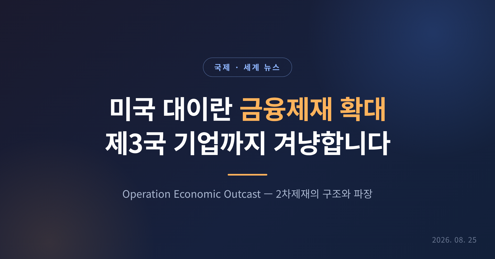
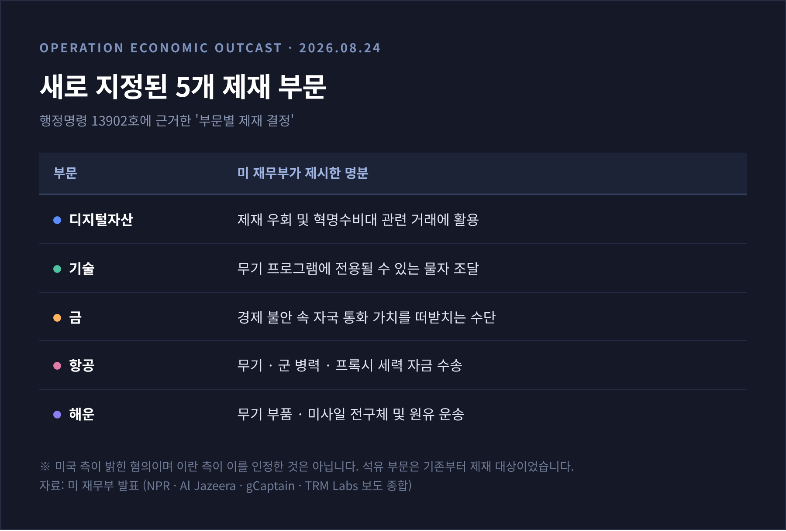
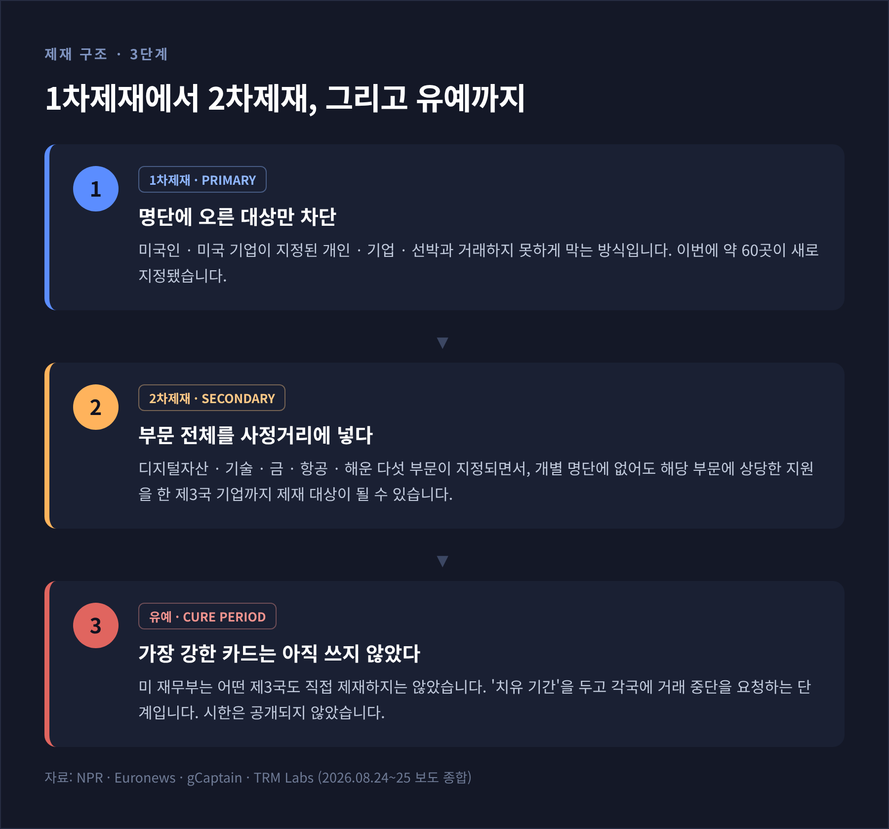
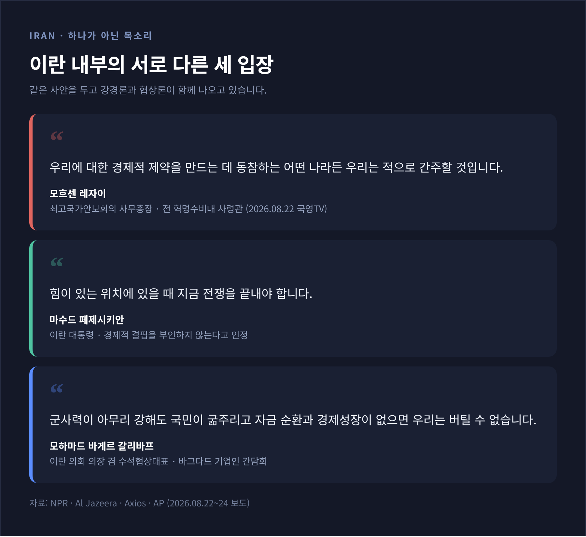
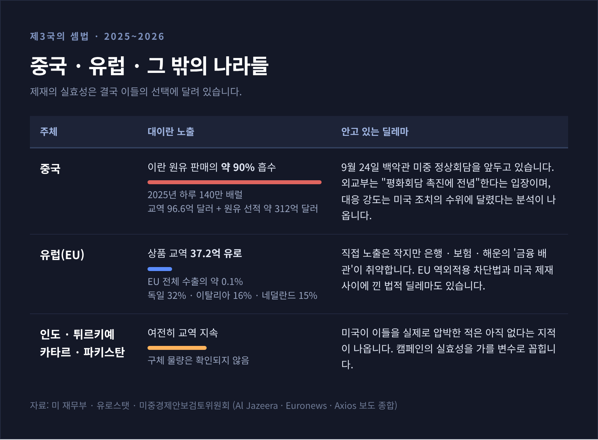
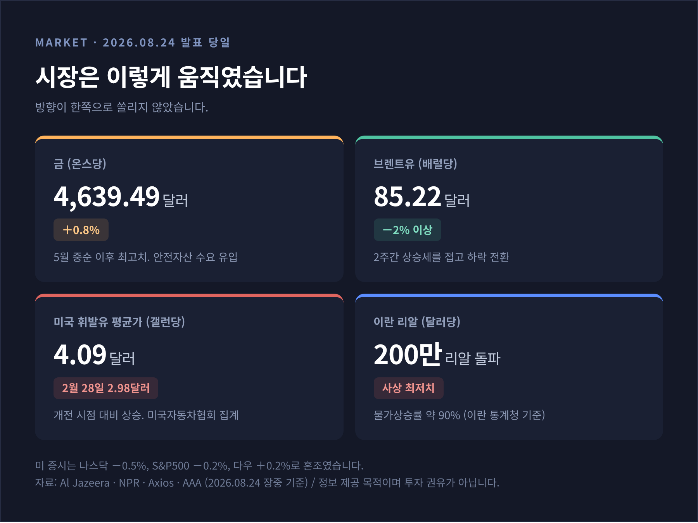

미국 대이란 금융제재 확대, 제3국 기업까지 겨냥한 이유와 파장

2026년 8월 24일, 미국 재무부가 대이란 경제 캠페인 'Operation Economic Outcast'를 발표했습니다. 개인·기업·선박 약 60곳을 제재 대상에 올렸고, 다섯 개 산업 부문을 통째로 제재 가능 영역으로 지정했습니다. 이번 글에서는 무엇이 발표됐고 왜 중요한지, 그리고 관련국들이 어떤 계산을 하고 있는지 차례로 정리해 보겠습니다.
먼저 세 줄로 요약하겠습니다.
- 미국은 이란과 거래하는 제3국 기업까지 겨냥하는 2차제재(세컨더리 색션)의 적용 범위를 크게 넓혔습니다.
- 다만 특정 국가를 직접 제재하는 가장 강력한 카드는 이번에 쓰지 않고 유보했습니다.
- 이란은 제재 동참국을 "적"으로 규정했고, 중국·유럽·인도는 각자 다른 셈법을 안고 있습니다.
8월 24일, 워싱턴에서 발표된 것
스콧 베선트 미국 재무장관이 이날 워싱턴 D.C. 재무부 청사에서 기자회견을 열었습니다. 미 재무부는 이 조치를 "이란과 그 조력자에 대한 범정부 차원의 경제 캠페인"으로 규정했습니다.
내용은 크게 두 갈래입니다.
첫째, 해외자산통제국(OFAC)이 개인·기업·선박 약 60곳을 제재 명단에 올렸습니다. 핵·미사일 조달, 사이버 작전, 석유 수익 창출에 관여한 네트워크가 대상입니다. 소재지는 아랍에미리트, 홍콩, 중국, 싱가포르, 스위스, 유럽 등으로 흩어져 있습니다.
둘째, 행정명령 13902호에 근거해 다섯 개 부문에 대한 '부문별 제재 결정'을 내렸습니다. 디지털자산(암호화폐), 기술, 금, 항공, 해운입니다.
베선트 장관은 회견에서 이렇게 말했습니다. "우리의 목표는 이 정권을 지탱하는 모든 경제적 생명선을 끊어내 테헤란이 홀로 서게 만드는 것입니다."(NPR 인용)
미 재무부가 제시한 명분은 부문별로 다릅니다. 암호화폐는 제재 우회 통로로, 금은 자국 통화 가치를 떠받치는 수단으로, 항공은 무기와 병력 수송에, 해운은 무기 부품과 원유 운송에 쓰이고 있다는 것입니다. 다만 이는 미국 측이 밝힌 혐의이며, 이란 측이 이를 인정한 것은 아닙니다.

왜 '부문별 제재'가 결정적인가
이번 발표의 무게중심은 60곳이라는 숫자가 아닙니다. 구조의 변화에 있습니다.
예전에는 미국이 제재 대상을 하나하나 명단에 올리는 방식이었습니다. 지금은 부문 자체를 지정합니다. 부문별 결정이 내려지면 OFAC는 개별 지정 절차를 거치지 않고도, 해당 부문에서 활동하거나 그 부문에 '상당한' 지원을 제공한 전 세계 어느 기업이든 제재할 수 있습니다.
예를 들어 보겠습니다. 어느 제3국의 암호화폐 거래소가 이란 거래소와 상당 규모의 거래를 처리했다고 가정해 봅시다. 그 이란 측 상대방이 개별 제재 명단에 없더라도, 이 제3국 거래소는 미국 금융시스템 접근권을 잃을 위험에 놓입니다. 블록체인 분석업체 TRM Labs는 "이제 명단 대조만으로는 충분하지 않고, 부문 단위로 이란 노출을 파악해야 한다"고 설명했습니다.
해운 쪽 사례는 더 구체적입니다. 미 재무부는 UAE 거주 우크라이나 국적 이반 오부호프와 그의 회사 Foscom FZE를 지정하면서, 2023년 이후 1억 달러 넘는 암호화폐 결제를 처리해 혁명수비대 쿠드스군을 대신한 원유 판매를 뒷받침했다고 밝혔습니다. 싱가포르 소재 Azure Shipping, 홍콩·두바이의 벙커링 업체들도 명단에 올랐습니다. 유조선 다섯 척(SIFRA·G SILVER·QUANTUM HOPE·VOYAGE ELITE·TELA)도 차단 재산으로 지정됐습니다.
여기에 학술 교류, 개인 송금, 일부 스포츠 활동 등에 적용되던 예외 조항도 무기한 정지됐습니다. 해당 활동을 하던 단체는 9월 8일까지 정리해야 합니다. 신미국안보센터의 레이철 지엠바 부연구위원은 이 대목을 두고 "정권보다 일반 이란 국민에게 더 큰 영향을 미칠 것"이라고 지적했습니다.
가장 강력한 카드는 아직 테이블 위에 있습니다
그런데 이번 발표에는 눈여겨볼 공백이 하나 있습니다.
미 재무부는 어떤 제3국도 직접 제재하는 데까지는 나아가지 않았습니다. 유로뉴스는 재무부가 이를 '치유 기간(cure period)'이라 부르며 가장 강한 타격을 유보해 두었다고 전했습니다. 베선트 장관은 구체적 이행 시한을 제시하지 않았습니다. 다만 "워싱턴의 인내가 무한하지는 않다"고 덧붙였습니다.
중국 은행도 제재 대상이 될 수 있느냐는 질문에 그는 "누구도 미국 제재의 손길 밖에 있지 않다"고 답했습니다. 그러나 발동 시점을 묻자 이렇게 되받았습니다. "내가 왜 글로벌 금융시스템을 폭파시키고 싶겠습니까?"(NPR 인용)
대신 외교 채널이 함께 움직이고 있습니다. 베선트 장관에 따르면 트럼프 대통령이 각국 정상에게 직접 전화를 걸어 이란과의 거래 중단을 요청하고 있습니다. "우리는 모두에게 잘못된 행동을 바로잡을 기회를 주고 있습니다." 노르망디 상륙작전에 빗댄 '경제판 D-데이'라는 표현을 써 왔지만, 실제 진행 방식은 유예와 통보에 가깝습니다.
Axios는 미 당국자들을 인용해, 확대된 2차제재가 최소한 중간선거 이후까지 대이란 주요 수단이 될 것이라고 전했습니다.

이란의 반응은 하나가 아닙니다
이란 측 목소리를 단일하게 옮기면 사실과 멀어집니다. 실제로는 결이 뚜렷하게 갈립니다.
강경한 쪽은 모흐센 레자이 최고국가안보회의 사무총장입니다. 혁명수비대 사령관 출신으로, 2026년 8월 이 자리에 임명됐습니다. 그는 발표 이틀 전 국영TV 인터뷰에서 "우리에 대한 경제적 제약을 만드는 데 동참하는 어떤 나라든 우리는 적으로 간주할 것"이라고 말했습니다. 보복은 "지진과 같은 방식"이 될 것이라고도 했습니다. 걸프 국가들이 미국 캠페인에 동참하면 "단 한 방울의 석유도 이 지역을 빠져나가지 못할 것"이라고 경고했습니다. AP 등 서방 매체는 이 발언을 두고 이란이 제3국의 제재 동참을 사실상 '전쟁 행위'로 규정했다고 보도했습니다.
다른 목소리도 있습니다. 마수드 페제시키안 대통령은 정부가 경제적 결핍을 부인하지 않는다고 인정하면서, 힘이 있는 위치에 있을 때 지금 전쟁을 끝내야 한다고 강조했습니다. 모하마드 바게르 갈리바프 의회 의장 겸 수석협상대표는 바그다드에서 기업인들을 만나 이렇게 말했습니다. "군사력이 아무리 강해도 국민이 굶주리고 자금 순환과 경제성장, 국내 생산이 없으면 우리는 버틸 수 없습니다."

이란 경제 상황은 이 발언들의 배경이 됩니다. 이란 통계청 기준 물가상승률은 약 90%입니다. 8월 24일 리알화는 달러당 200만 리알을 돌파하며 사상 최저치를 새로 썼습니다. NPR이 인터뷰한 30세 이란 여성은 외상 장부로 식료품을 사고 있으며 "식료품점에 빚이 있어서 파스타를 만들 토마토페이스트조차 못 샀다"고 말했습니다. 인슐린 같은 필수 의약품 가격도 크게 올랐다고 합니다.
중국·유럽·인도, 각자의 셈법
이 조치가 실제로 작동할지는 제3국의 선택에 달려 있습니다.
중국의 위치가 가장 큽니다. 미 재무부에 따르면 중국은 이란 원유 판매의 약 90%를 흡수하고, 2025년 하루 140만 배럴을 사들였습니다. 같은 해 양방향 교역은 96억 6천만 달러였고, 여기에 약 312억 달러 규모의 원유 선적은 포함되지 않았습니다. 중국 외교부는 "평화회담 촉진에 전념하고 있다"는 입장을 냈습니다. 런민대 충양금융연구원의 왕원 원장은 대응 조치의 강도가 "미국 조치의 심각성"에 달렸다고 말했습니다. 변수가 하나 더 있습니다. 트럼프 대통령은 9월 24일 백악관에서 시진핑 주석과 정상회담을 앞두고 있습니다.
유럽은 직접 노출이 작습니다. 유로스탯 기준 EU-이란 상품 교역액은 2025년 37억 2천만 유로로, EU 전체 수출의 약 0.1% 수준입니다. 2011년 정점(270억 유로 이상)과 비교하면 크게 줄었습니다. 그래서 8월 25일 오전 유럽 증시는 담담했습니다. 유로스톡스50과 스톡스600 모두 0.2%가량 올랐습니다.
다만 유럽의 진짜 부담은 교역이 아니라 금융 배관에 있습니다. 은행·보험사·해운사·원자재 트레이더는 수십 개국 고객의 거래를 처리하는데, 테헤란과의 직접 거래가 아니라 다른 곳에 있는 제재 대상 상대방에 대한 노출이 제재를 부르는 경우가 많기 때문입니다. BNP파리바가 2014년 89억 달러 벌금과 함께 뉴욕 사무소의 달러 청산 권한을 1년간 잃었던 일이 아직 유럽 이사회들의 기억에 남아 있습니다. 여기에 EU의 역외적용 차단법은 집행위 승인 없이 미국의 대이란 제재를 따르는 것을 금지하고 있어, 유럽 기업은 법적으로도 난처한 위치에 놓입니다.
인도, 튀르키예, 카타르, 파키스탄 등도 여전히 이란과 교역하는 나라로 거론됩니다. Axios는 압박 캠페인이 실효를 거두려면 미국이 이들 국가를 공격적으로 상대해야 하는데 지금까지는 그렇게 하지 않았다고 지적했습니다.

시장은 어떻게 움직였나
발표 당일 시장 반응은 방향이 엇갈렸습니다.
금은 안전자산 수요를 타고 0.8% 올라 온스당 4,639.49달러를 기록했습니다. 5월 중순 이후 최고치입니다. 반면 국제유가는 2주간의 상승세를 접었습니다. 브렌트유는 2% 넘게 밀린 배럴당 85.22달러에 마감했습니다. 미 증시는 나스닥 -0.5%, S&P500 -0.2%, 다우 +0.2%로 혼조였습니다.
체감은 다른 곳에서 나타납니다. 미국자동차협회 집계 기준 미국 휘발유 평균가는 갤런당 4.09달러입니다. 미국과 이스라엘이 이란을 처음 타격한 2월 28일의 2.98달러와 비교하면 차이가 뚜렷합니다.
해운 쪽 부담은 이미 큽니다. 토탈에너지 최고경영자에 따르면 호르무즈 해협을 통과하는 초대형 원유운반선의 운송 비용은 약 2,000만 달러에 이릅니다. IEA는 이 지역 에너지 수출이 역사상 최대 규모의 차질을 겪고 있다고 분석했습니다.
투자은행 Post Oak Group의 존 딜은 이렇게 경고했습니다. "제재가 이란의 걸프 해운 보복을 촉발하거나 보험사와 해운사가 이 지역을 기피하게 만들면, 미국인들은 휘발유와 항공료, 물류비, 궁극적으로 인플레이션을 통해 매우 빠르게 체감하게 될 것입니다."

한국은 어디에 서 있나
한국에게 이 사안은 먼 나라 이야기가 아닙니다. 한국이 들여오는 원유의 상당 부분이 호르무즈 해협을 지나기 때문입니다.
한국경제연구원은 2026년 4월 발간한 브리프에서 호르무즈 리스크를 진단했습니다. 2월 28일 미국·이스라엘 연합의 작전 이후 이란이 호르무즈를 전면 폐쇄하면서, 당시 두바이유는 배럴당 157.66달러까지 치솟았고 원·달러 환율은 1,500원을 넘겼으며 코스피는 7.24% 급락했습니다. 제조업 원가는 최대 5.19% 상승했고, 반도체·IT 핵심 소재인 브롬과 헬륨 공급망에도 차질 가능성이 커졌다고 분석했습니다.
같은 보고서의 시나리오 분석은 전쟁이 전면전으로 장기화될 경우 한국 GDP 성장률이 0.8%p 하락하고, 소비자물가는 2.9%p 상승하며, 경상수지는 767억 달러까지 감소할 것으로 전망했습니다. 다만 이 수치들은 4월 시점의 전망이자 시나리오라는 점을 분명히 해 둘 필요가 있습니다. 8월 24일 브렌트유가 85달러대였던 것을 보면, 당시 국면과 지금은 상황이 다릅니다. 방산과 해운·조선은 장기화 국면에서 상대적 수혜 업종으로 거론되기도 했습니다.
정부는 석유화학 원료 매점매석 금지, 비중동 지역 원유 도입 시 운임 차액 지원 등으로 도입선 다변화를 유도해 왔습니다. 국내 정유업계는 결제와 보험, 추가 제재 가능성 때문에 이란산 원유 도입에 당장 나서기는 어렵다는 입장입니다.
이 조치는 효과를 낼까
전문가 평가는 갈립니다. 양쪽을 함께 보시는 편이 정확합니다.
효과에 회의적인 쪽부터 보겠습니다. 2015년까지 이란 핵협상 미국 대표단에 참여했던 앨런 아이어 전 외교관은 미국이 이미 "낮게 달린 열매, 중간 열매, 높이 달린 열매, 나무까지" 다 건드렸다며 "효과를 낼 새로운 제재는 없다"고 말했습니다. Defense Priorities의 제니퍼 카바노 선임연구원은 중국과의 경제 관계를 끊는 것이 관건이지만 "미국은 그렇게 하지 않을 것"이라고 봤습니다. 중국이 보복할 지렛대를 갖고 있기 때문입니다. Obsidian Risk Advisors의 브렛 에릭슨은 "제재는 기업들의 리스크 회피를 강제할 수 있지만, 그 역할을 대신할 주체는 언제나 나타난다"고 지적했습니다.
압박이 실제로 통하고 있다고 보는 쪽도 있습니다. 테헤란의 지정학 분석가 페이만 살레히는 "이란이 예년처럼 제재를 그저 우회할 여지가 훨씬 줄어든 것으로 보인다"고 평가했습니다. 익명의 미 당국자는 이란 엘리트층조차 구매력이 급락해 "생애 처음으로 월급이 제때 나올지 불확실한 상황"에 놓였다고 전했습니다.
미국 국내 여론도 변수입니다. 7월 말 로이터/입소스 조사에서 미국인의 약 3분의 1만 전쟁을 지지했고, CNN 조사에서는 28%만 트럼프 대통령의 이란 대응을 지지했습니다. AP/NORC 조사 기준 경제 운영 지지율은 32%였습니다. 경제와 이란 문제가 중간선거의 쟁점으로 떠오르고 있습니다.
정리하면 이렇습니다.
이번 발표는 새로운 제재의 '실행'이라기보다, 제재의 사정거리를 부문 단위로 넓혀 두고 각국에 선택을 요구한 '통보'에 가깝습니다. 실제 파괴력은 유예된 카드를 언제, 누구에게 쓰느냐에 달려 있습니다. 그 판단의 한가운데에 9월 24일 미중 정상회담이 놓여 있습니다.
한 문장으로 줄이면 이렇게 됩니다. "이번 조치의 크기는 발표된 것이 아니라, 아직 발표되지 않은 것이 결정합니다."
앞으로 몇 주가 이 캠페인의 성격을 가를 것입니다. 워싱턴이 정말로 제3국 금융기관에 손을 댈지, 아니면 유예 상태를 유지할지 지켜볼 일입니다.
본 글은 2026년 8월 25일 기준으로 확인된 보도 내용을 정리한 것입니다. 유가·환율·금 시세 등 시장 관련 서술은 정보 제공 목적이며, 특정 자산에 대한 투자 권유가 아닙니다. 투자 판단과 그 결과에 대한 책임은 투자자 본인에게 있습니다.
참고: NPR, Al Jazeera, Axios, gCaptain, TRM Labs, Euronews, NBC News, AP, 한국경제연구원